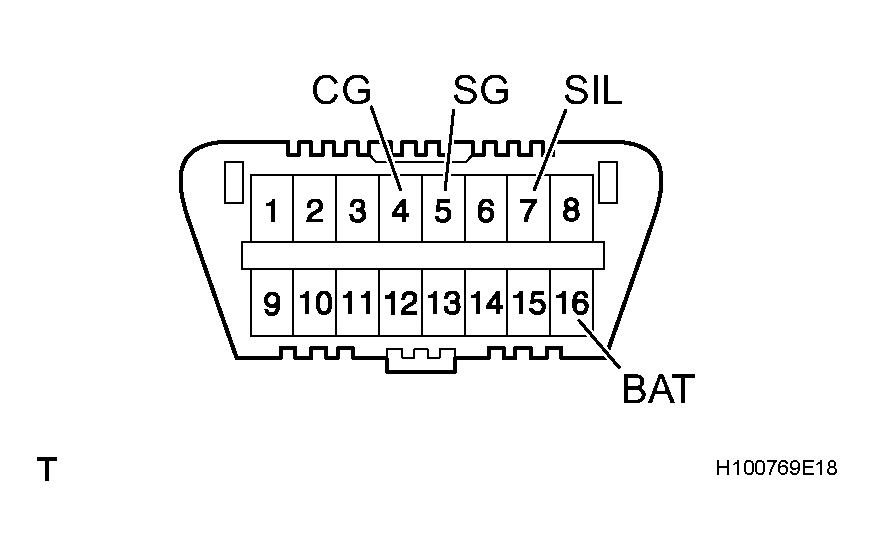

Diagnosis System (2005/12- )
- DESCRIPTION
- The center airbag sensor controls the functions of the Supplemental Restraint System (SRS) on the vehicle. Data of the SRS can be read through the Data Link Connector 3 (DLC3) of the vehicle. When the system seems to be malfunctioning, use the intelligent tester to check for a malfunction and perform repairs.
- CHECK DLC3
- The ECU uses ISO 15765-4 for communication. The terminal arrangement of the DLC3 complies with ISO 15031-3 and matches the ISO 15765-4 format.

Courtesy of © TOYOTA, LICENSE AGREEMENT TMS1002DLC3 TERMINAL DESCRIPTION AND SPECIFIED CONDITIONSSymbols (Terminal No.) Terminal Description Connection Specified Condition SIL (7) - SG (5) Bus "+" line During transmission Pulse generation CG (4) - Body ground Chassis ground Always Below 1 Ω SG (5) - Body ground Signal ground Always Below 1 Ω BAT (16) - Body ground Battery positive Always Below 1 Ω If the result is not as specified, the DLC3 may have a malfunction. Repair or replace the harness and connector.
HINT:
Connect the cable of the intelligent tester (with CAN VIM) to the DLC3, turn the ignition switch ON and attempt to use the tester. If the display indicates that a communication error has occurred, there is a problem either with the vehicle or with the tester.
- If communication is normal when the tester is connected to another vehicle, inspect the DLC3 on the original vehicle.
- If communication is still not possible when the tester is connected to another vehicle, the problem is probably in the tester itself. Consult the Service Department listed in the tester's instruction manual.
- The ECU uses ISO 15765-4 for communication. The terminal arrangement of the DLC3 complies with ISO 15031-3 and matches the ISO 15765-4 format.
- SYMPTOM SIMULATION
HINT:
The most difficult case in troubleshooting is when no symptoms occur. In such cases, a thorough customer problem analysis must be carried out. Then the same or similar conditions and environment in which the problem occurred should be simulated. No matter how much skill or experience a technician has, troubleshooting without confirming the problem symptoms will lead to important repairs being overlooked, mistakes and delays.
- Vibration method: When vibration seems to be the major cause.
- Apply slight vibration with a finger to the part of the sensor considered to be the cause of the problem and check whether or not the malfunction occurs.NOTE: Applying strong vibration to relays may open relays.
- Slightly shake the connector vertically and horizontally.
- Slightly shake the wire harness vertically and horizontally.
HINT:
The connector joint and fulcrum of the vibration are the major areas that should be checked thoroughly.
- Apply slight vibration with a finger to the part of the sensor considered to be the cause of the problem and check whether or not the malfunction occurs.
- Vibration method: When vibration seems to be the major cause.
- FUNCTION OF SRS WARNING LIGHT
- Primary check:
- Turn the ignition switch OFF. Wait at least 2 seconds and then turn the ignition switch ON. The SRS warning light illuminates for approximately 6 seconds and the SRS diagnosis is performed.
HINT:
If trouble is detected during the primary check, the SRS warning light remains on even after the primary check period (approximately 6 seconds) has elapsed.
- Turn the ignition switch OFF. Wait at least 2 seconds and then turn the ignition switch ON. The SRS warning light illuminates for approximately 6 seconds and the SRS diagnosis is performed.
- Constant check:
- After the primary check, the center airbag sensor constantly monitors the SRS for malfunctions.
HINT:
If malfunctions are detected during the constant check, the center airbag sensor functions as follows:
- The SRS warning light illuminates.
- The SRS warning light turns off, and then illuminates. This blinking pattern indicates the source voltage drop. After the source voltage returns to normal for 10 seconds, the SRS warning light turns off.
- After the primary check, the center airbag sensor constantly monitors the SRS for malfunctions.
- Review:
- When the SRS is normal:
The SRS warning light illuminates only during the primary check period (approximately 6 seconds after the ignition switch is turned ON).
- When the SRS is malfunctioning, one of the following may occur:
- The SRS warning light remains on even after the primary check period has elapsed.
- The SRS warning light turns off after the primary check, but illuminates again during the constant check.
- The SRS warning light does not illuminate when turning the ignition switch from OFF to ON.
HINT:
The center airbag sensor keeps the SRS warning light illuminated after an airbag has been deployed.
- When the SRS is normal:
- Primary check:
- SRS WARNING LIGHT CHECK
- Turn the ignition switch ON, and check that the SRS warning light illuminates for approximately 6 seconds (primary check).
- Check that the SRS warning light turns off approximately 6 seconds after the ignition switch is turned ON (constant check).
HINT:
When any of the following symptoms occur, refer to the PROBLEM SYMPTOMS TABLE .
- The SRS warning light illuminates occasionally after the primary check period has elapsed.
- The SRS warning light illuminates but a DTC is not output.
- The ignition switch is turned from OFF to ON but the SRS warning light does not illuminate.
- RELEASE METHOD OF ACTIVATION PREVENTION MECHANISM
- The activation prevention mechanism is built into the connector for the squib circuit of the SRS. As explained in the troubleshooting section, insert a piece of paper that is the same thickness as the male terminal between the terminal and short spring to release the mechanism (refer to the illustrations below).CAUTION: Never release the mechanism on the squib side connector.NOTE:
- Do not release the mechanism unless instructed to do so in the troubleshooting procedure.
- To prevent the terminal and short spring from being damaged, always use a piece of paper that is the same thickness as the male terminal.
- The activation prevention mechanism is built into the connector for the squib circuit of the SRS. As explained in the troubleshooting section, insert a piece of paper that is the same thickness as the male terminal between the terminal and short spring to release the mechanism (refer to the illustrations below).